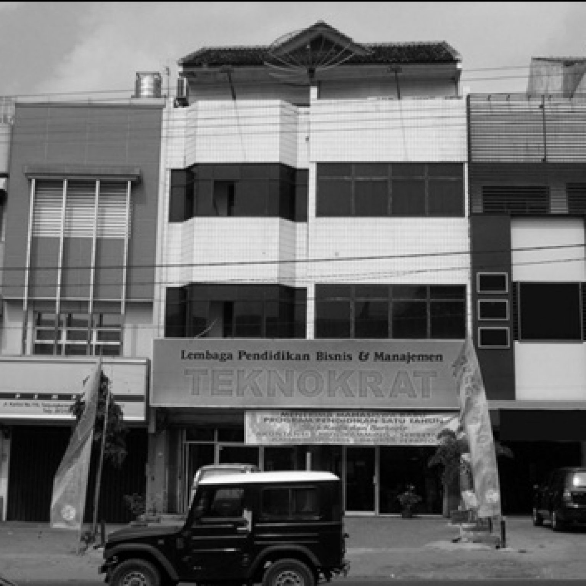
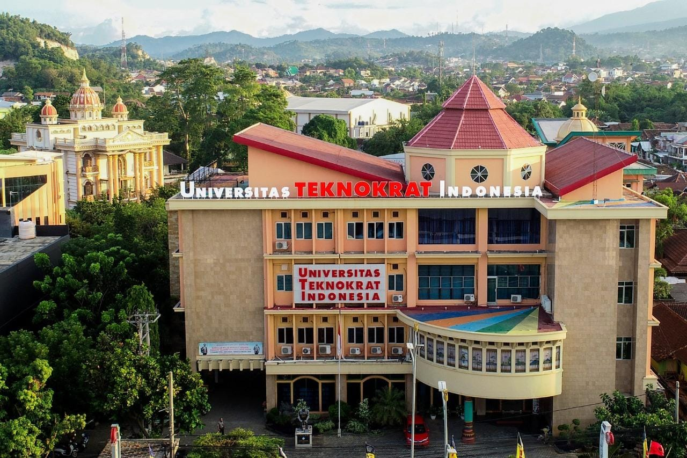
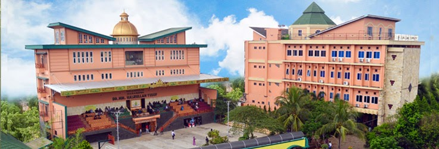

Sejarah Universitas Teknokrat Indonesia :

Lembaga Pendidikan Teknokrat yang telah ditunjuk sebaga model percontohan Program Pendidikan Sistem Ganda (link and match)
tingkat nasional, didirikan pada tanggal 19 Febuari 1986 dengan menggunakan nama “Kursus dan Bimbingan
Technocrat” atas izin Depdikbud (Depdiknas) Propinsi Lampung. Lembaga ini didirikan oleh Nasrullah Yusuf dengan
bermodalkan sebuah motor bekas merk Bajaj yang dijual Rp 1.600.000,-. Pada awal berdirinya, hanya menggunakan satu gedung yang
disewa Rp 1.000.000,- pertahun, dengan perlengkapan yang didesain sendiri yaitu dua papan tulis kapur, 50 kursi dari kayu, satu
meja tata usaha, dan mesin tik manual.
Program yang diselenggarakan pada awal pendiriannya masih terbatas pada kursus Bahasa Inggris, Akuntansi, bimbingan Belajar, dan Mengetik Manual. Warga belajar pada waktu pertama kali dibuka dibulan maret 1986 terdiri dari 32 warga belajar Bahasa Ingris (2 kelas), 22 warga belajar Akuntansi, dan 8 warga belajar mengetik manual. Pada bulan Mei 1986 Bimbingan Belajar dimulai dengan jumlah 3 peserta. Tenaga pengajar pada saat itu hanya dua orang yaitu Nasrullah Yusuf sendiri yang mengajar Bahasa Inggrs, Akuntansi, Mengetik, Bimbingan Belajar dan merangkap tata usaha, seta Ny. Hernaini Nasrul mengajar Bahasa Inggris dan Mengetik Manual.
Pada tahun 1995 Kursus dan Bimbingan Technocrat berganti nama dalam rangka Indonesianisasi menjadi Lembaga Pendidikan Teknokrat. Lembaga ini membawahi dua departemen yaitu Departemen Kursus dan Bimbingan, serta Departemen Lembaga Pendidikan Bisnis dan Manajemen.
Lembaga Pendidikan Bisnis dan Manajemen berupaya untuk terus mengembangkan program-program pendidikannya. Pada tahun 1996, Program Pendidikan Satu Tahun Teknokrat memulai proses pembelajarannya. Sampai saat ini Program Pendidikan Satu Tahun Teknokrat menyelenggarakan Program Pendidikan Satu Tahun Siap Kerja ECOMTEC (english computer techlogy infomation), komputer Akuntansi, Komputer Desain Grafis, Komputer Sekretaris, dan Bahasa Inggris.
 Dari perkembangan yang pesat dan prestasi-prestasi yang telah diraih Lembaga Pendidikan Teknokrat, Lebaga ini berusaha untuk meningkatkan peran sertanya dalam mencerdaskan kehidupan bangsa, salah satu upaya yang dilakukan adalah dengan mendirikan Perguruan Tinggi Teknokrat pada tahun 2000. Perguruan tinggi ini terdiri dari tiga institusi, yaitu Sekolah Tinggi Manajemen Informatika dan Komputer (STMIK) Teknokrat, Akademi Manajemen Informatikan dan Komputer (AMIK) Teknokrat dan Sekolah Tinggi Bahasa Asing (STBA) Teknokrat.
Sekolah Tinggi Manajemen Informatika dan Komputer (STMIK) Teknokrat telah mendapat ijin operasional dan status badan hukum pada tanggal 8 Februari 2001 serta status terdaftar di Direktorat Jendral Pendidikan Tinggi Departemen Pendididkan Nasional dengan Nomor; 13/D/O/2001. STMIK Teknokrat memiliki dua program studi Strata Satu yaitu Teknik Informatika (TI) dan Sistem Informasi (SI). Kedua program studi tersebut telah terakreditasi oleh Badan Akreditasi Nasional Perguruan Tinggi (BAN PT).
Akademi Manajemen Informatika dan Komputer (AMIK) Teknokrat telah mendapatkan ijin operasional dan status badan hukum pada tanggal 9 Juni 2000 serta status terdaftar di Direktorat Jendral Pendidikan Tinggi Departemen Pendidikan Nasional Nomor: 92/D/O/2000. AMIK Teknokrat memiliki tiga program studi Diploma Tiga yaitu Komputer Akuntansi (KA), Manajemen Informatika (MI) dan Teknik Komputer (TK). Terhitung sejak tahun 2003 hingga saat ini ketiga program studi tersebut elah terakreditasi oleh Badan Akreditasi Nasional Perguruan Tinggi (BAN PT).
Sekolah Tinggi Bahasa Asing (STBA) Teknokrat telah mendapat ijin operasional dan status badan hukum pada tanggal 25 April 2000 serta status terdaftar di Direktorat Jendral Pendidikan Tinggi Departemen Pendididkan Nasional dengan Nomor; 48/D/O/2000. STBA Teknokrat memiliki satu program studi Strata Satu yaitu Sastra Inggris dan dua program studi Diploma Tiga yaitu Bahasa Inggris dan Bahasa Jepang. Sejak tahun 2003 hingga saat ini ketiga program studi yang ada di Sekolah Tinggi Bahasa asing Teknokrat telah terakreditasi oleh Badan Akreditasi Nasional Perguruan Tinggi (BAN PT).
Perkembangan Perguruan Tinggi STMIK-AMIK-STBA Teknokrat semakin pesat. Pesatnya perkembangan Perguruan Tinggi STMIK-AMIK-STBA Teknokrat telah diakui hingga tingkat internasional, hal ini dibuktikan dengan diterimanya Sertifikat Manajemen Mutu Internasional ISO 9001:2008 yang diterbitkan oleh SAI Global dari Australia untuk Perguruan Tinggi STMIK-AMIK-STBA Teknokrat.
 Dalam rangka meningkatkan sumbangsih Yayasan Pendidikan Teknokrat dalam meningkatkan kualitas pendidikan di Indonesia, pada tahun 2015 Yayasan Pendidikan Teknokrat berinisiatif untuk meningkatkan kapasitas institusi ketiga lembaga pendidikan tinggi (STMIK AMIK dan STBA Teknokrat). Pada tahun 2015 Yayasan Pendidikan Teknokrat mengajukan usul kepada Direktorat Jenderal Pendidikan Tinggi untuk menggabungkan ketiga lembaga pendidikan tinggi yang diselenggarakan dan berubah bentuk menjadi universitas. Usaha dan kerja keras Yayasan Pendidikan Teknokrat akhirnya mendapatkan hasil dengan direstuinya penggabungan STMIK-AMIK-STBA Teknokrat menjadi Universitas dengan nama Universitas Teknokrat Indonesia dengan Surat Ketetapan Nomor 494/KPT/I/2017 yang mulai berlaku Tanggal 18 September 2017. Universitas Teknokrat Indonesia menyelenggarakan 3 fakultas meliputi Fakultas Teknik dan Ilmu Komputer, Fakultas Ekonomi dan Bisnis dan Fakultas Sastra dan Ilmu Pendidikan.